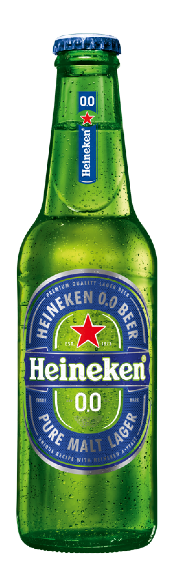
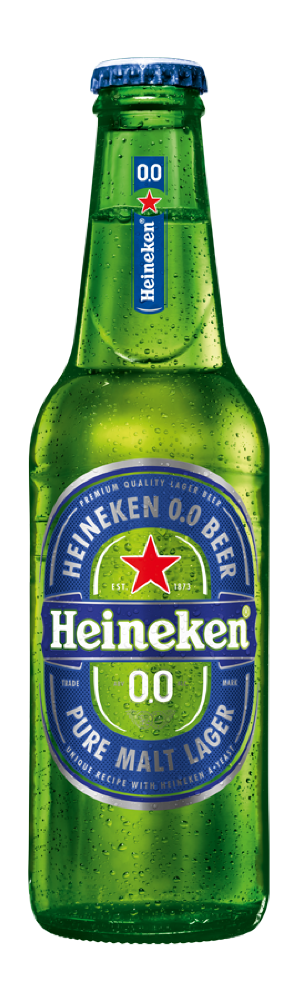

This onepager has two functions; obviously, one being showing you what I did through communicating with you like this. The gist of it however, is that it at the same time functions as my project itself. This whole webpage is completely custom coded. Not even bootstrap has been added! Furthermore, if all has went well, you'll actually be visiting this on a real url! No, I didn't purchase some expensive domainname or any of that jazz; I actually made my first action as a DevOps.
That basicly means this whole webpagine is hosted by Microsoft Azure. Hopefully through a so
called CI-pipeline. This means that every change I commit automaticly gets uploaded to the cloud and onto this
page.
To make a long story short; I put in a lot of back-end work, to make a page that contains relatively little,
yet has everything set up.
So, without further ado, welcome to the page! As said previously, the page itself is pretty compact. That is
because setting up the baseline is 99% of the work. Most of the info will still
be on the final rapport, but I think this gives enough of an impression.
Target number one is without a doubt acomplished; I published a regular stream of commits and kept it informative. Two is shown later down below; once you get there you'll have to quickly refresh the page. Three is, if all went well, a succes as well. I have actually build upon 1 and 3 by taking on the additional task of creating a CI-pipeline.
Below this you'll see my first attempt at learning point 2 and using GSAP for a quick funny try!

0%
 

Net zo lekker